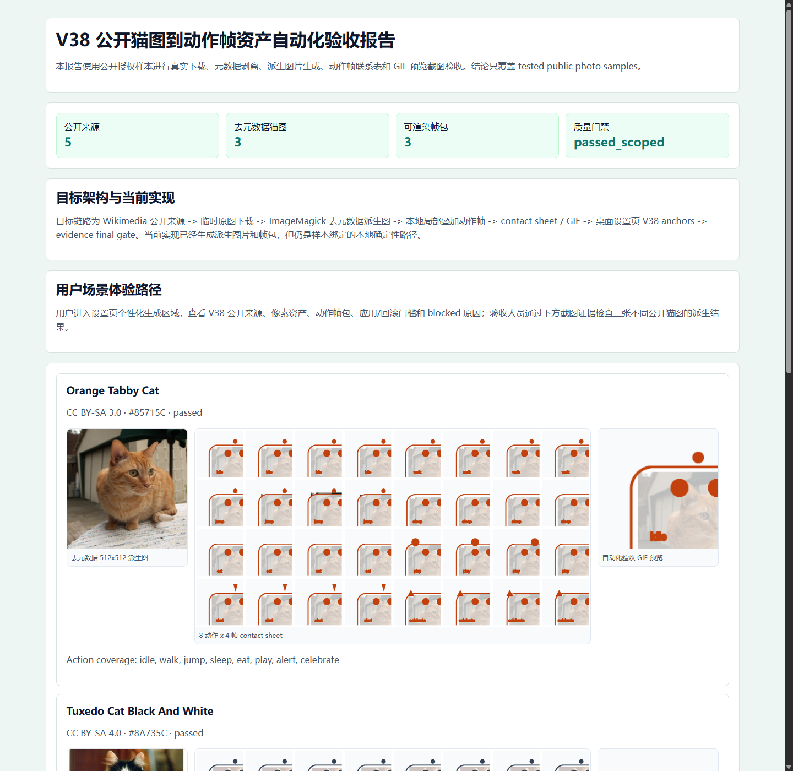

V38 阶段性可视化验收报告
本报告基于 V38 PRD、目标架构、代码实现、阶段证据和自动化截图。结论只覆盖 tested public photo samples，不扩展到任意猫自动生成或生产发布。
公开来源5
通过猫图3
动作帧包3
阶段结论scoped pass
目标架构与当前实现
| 层级 | 目标设计 | 当前实现 | 审计结论 |
|---|---|---|---|
| 来源层 | 公开授权样本，含负例和 blocked 样本 | Wikimedia public source manifest，3 cat + dog negative + multi-cat blocked | 通过 |
| 像素层 | 原图不入仓，保存去元数据派生图 | 512x512 sanitized PNG + hash evidence | 通过 |
| 动作层 | 每只猫生成 8 动作、多帧、非 transform-only | 8 actions x 4 frames，contact sheet，GIF preview | 通过 scoped |
| 产品层 | 设置页展示来源、像素、动作、apply/rollback、blocked reason | V38 UI anchors 已通过合同检查；headless settings screenshot 白屏 | 合同通过，截图风险保留 |
| 证据层 | 中文 HTML、截图、claim/security scan | V38 report screenshot 和阶段审计报告 | 通过 |
用户场景体验路径
验收者可以从公开猫图样本开始，检查派生图、动作帧联系表和 GIF 预览，确认本阶段确实不再只展示旧的简单线条猫。该路径展示的是样本绑定本地生成结果，不是任意猫自动高质量生成。

三组公开猫图动作证据


功能与测试覆盖
| 验收项 | 自动化结果 | 说明 |
|---|---|---|
| desktop test | 329 tests passed | 包含 V38 public photo action pipeline 单测 |
| desktop check/build | passed | TypeScript 与 Vite build 通过 |
| petctl test | 71 tests passed | CLI 回归通过 |
| V30 semantic gate | passed | 弱 transform-only 候选仍被拒绝 |
| V38.0-V38.7 | passed scoped | 来源、像素、动作、质量、UI 合同、报告、final gate 通过 |
| drawio | 8 pages parsed | V38 页面名称和 XML 可解析 |
截图风险与不虚假验收
设置页在 Vite browser preview 的 DOM dump 中已经生成内容，但 Windows Chrome/Edge headless screenshot 输出白屏。因此本报告不把 settings screenshot 当作 UI 视觉通过证据，只把 V38.5 UI anchor contract 当作产品 UI 合同证据。
白屏截图文件保留为失败证据：v38_stage-settings-desktop-2026-06-26.png、v38_stage-settings-mobile-2026-06-26.png。
禁止扩展声明
本阶段不能声明任意猫照片自动生成高质量动作资产、provider integration verified、production ready、Windows ready、cross-platform ready、3D ready、Petdex parity、MCP ready、Claude integration verified、OS-level Codex binding ready 或 all Codex workflows verified。